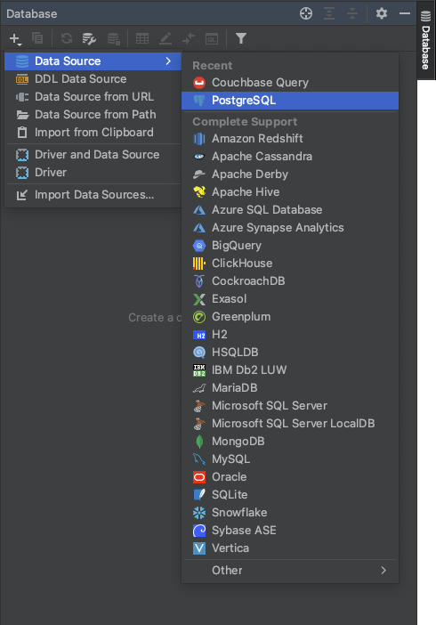
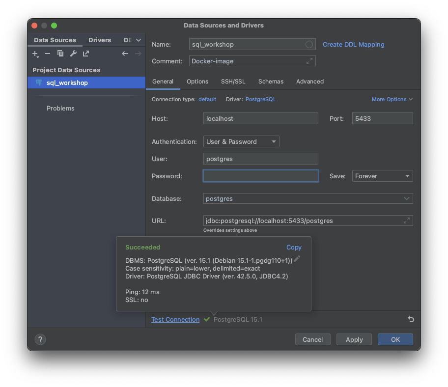
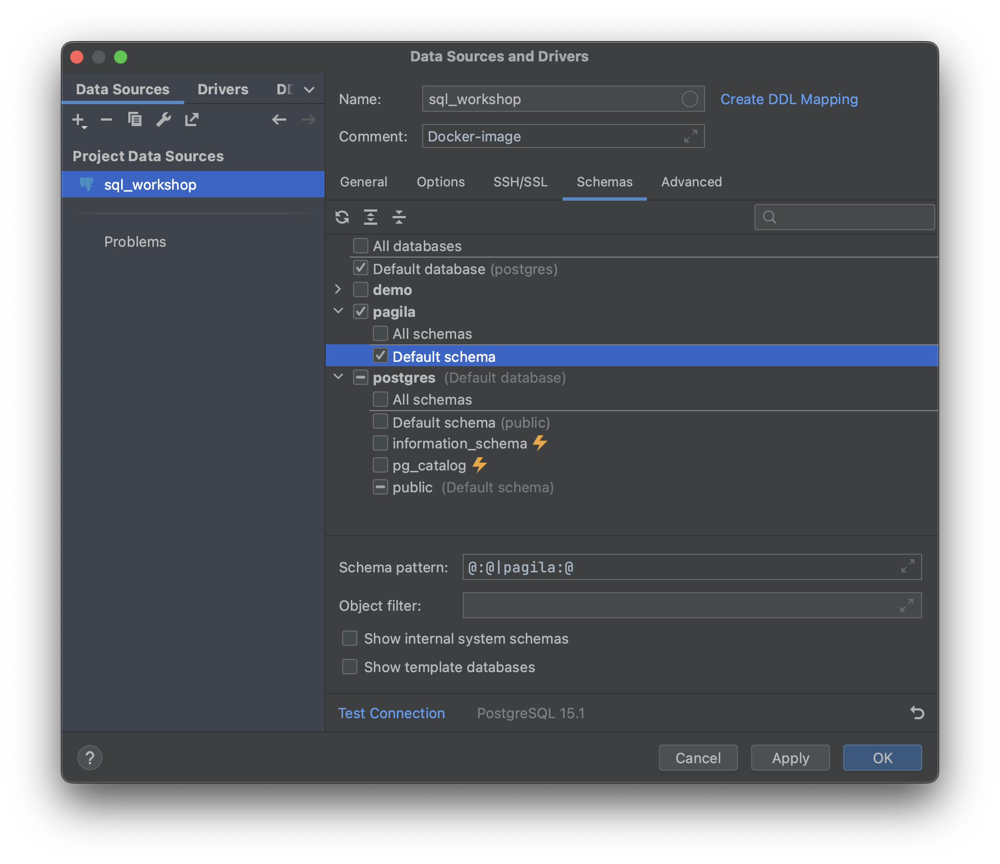
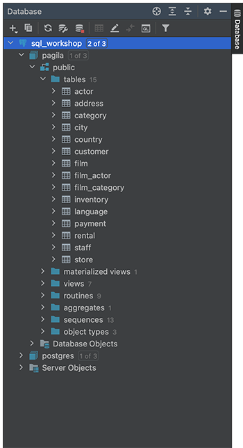
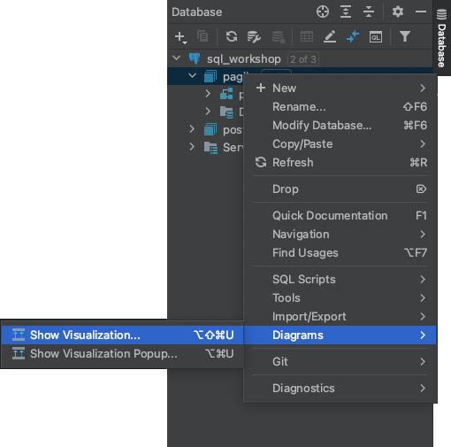
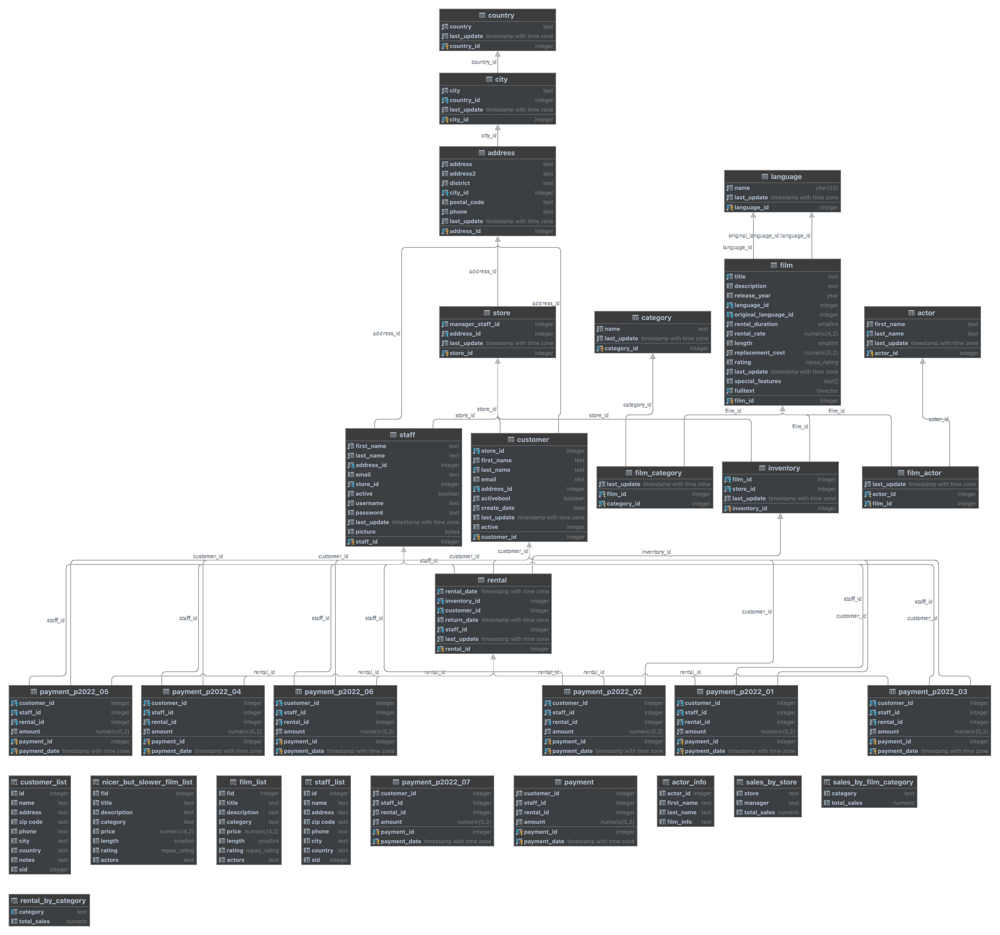

PostgreSQL workshop

Vi jobber med eksempeldatabasen Pagila . Den inneholder eksempeldata fra driften av en videoutleiebutikk.
Postgres er en poulær relasjonsdatabase. Den er open source. Dialekten av SQL som brukes ligger nokså tett på standard SQL.
Starte og koble til databasen
Du kan kjøre opp databasen i docker med:
docker run \
--name sql_workshop -p 5433:5432 \
--env POSTGRES_USER=postgres \
--env POSTGRES_PASSWORD=123456 \
-d skaar/postgres-pagila
NB: Her bruker vi port 5433 i stedet for default for Postgres (5432). Det er for å unngå kollisjon med en eventuell installasjon på maskinen. Derfor må vi passe på å endre portnummeret når vi kobler til databasen nedenfor.
Om du bruker Windows må du også ha med parameteret
--platform linux/arm64
.
Når den er startet og initiert (det kan ta noen sekunder), kan vi koble til den i (for eksempel) IntelliJ:
- Åpne "Database"-panelet.
- Velg + > Data Source > PostgresSQL 
-
Legg in konfigurasjon for databasen:
- Name
- sql_workshop
- Host
- localhost
- Port
- 5433
- Authentication
- User & Password
- User
- postgres
- Password
- 123456
- Database
- pagila
- Klikk "Test Connection" for å se om koblingen fungerer.  Om du blir bedt om å laste ned driver, er det et godt råd.
- Under "Schemas", velg (minimum) pagila > Default schema 
- Klikk "OK", og ekspander database-noden for å se tabellene. 
- Høyreklikk på database-noden og velg enten Navigation > Jump to Query Console... eller + New > Query Console
-
Skriv
og klikk ▶︎ Execute (⌘↲)SELECT 'Hello world!';
Schema
Du kan få en visualisering av hvordan tabellene ser ut, og fremmednøkkel-koblingene mellom dem i IntelliJ.
Høyreklikk på det i basen du vil ha visualisert og velg Diagrams > Show Visualization….
 Hente data fra en enkel tabell
Hent alle rader fra en tabell.
Hent ut alle data fra ansatt-tabellen. (Den heter "public.staff".)
Løsningsforslag
SELECT * FROM staff;
-- * henter alle kolonner fra tabellen.
-- "public" er default schema, så det er valgfritt å ta med.
Hent enkelte kolonner fra en tabell.
Gjør en spørring i tabellen "customer" som henter de ti sist oppdaterte kundene med "fornavn", "etternavn" og "e-post".
fornavn | etternavn | e-post
-----------+-----------+-------------------------------------
PATRICIA | JOHNSON | PATRICIA.JOHNSON@sakilacustomer.org
LINDA | WILLIAMS | LINDA.WILLIAMS@sakilacustomer.org
BARBARA | JONES | BARBARA.JONES@sakilacustomer.org
ELIZABETH | BROWN | ELIZABETH.BROWN@sakilacustomer.org
JENNIFER | DAVIS | JENNIFER.DAVIS@sakilacustomer.org
MARIA | MILLER | MARIA.MILLER@sakilacustomer.org
SUSAN | WILSON | SUSAN.WILSON@sakilacustomer.org
MARGARET | MOORE | MARGARET.MOORE@sakilacustomer.org
DOROTHY | TAYLOR | DOROTHY.TAYLOR@sakilacustomer.org
MARY | SMITH | MARY.SMITH@sakilacustomer.org
(10 rows)
Hver kolonne kan gis nytt navn med AS i SELECT-uttrykket. Du sorterer på en kolonne med ORDER BY "kolonne" [ASC|DESC]. Legg LIMIT 10 på raden under for å begrense antall returnert.
Løsningsforslag
SELECT
first_name AS fornavn,
last_name AS etternavn,
email AS "e-post"
FROM customer
ORDER BY last_update DESC
LIMIT 10;
I stedet for LIMIT 10 kan man bruke OFFSET 0 ROWS FETCH NEXT 10 ROWS ONLY. Det kan være nyttig for å implementere paging for en visning.
Filtrere rader med WHERE
Finn alle kunder med fornavn som begynner på P.
For å matche på deler av en string kan du bruke LIKE og NOT LIKE (i stedet for =) og wildcards % (0 eller flere tegn) og _ (ett tegn).
Løsningsforslag
SELECT *
FROM customer
WHERE last_name LIKE 'P%';
Finn alle filmtitler med beskrivelse (fra tabellen "film") som har spilletid ("length") over 100 minutter og rating 'R'. Sorter på "rental_rate".
Løsningsforslag
SELECT title, description
FROM film
WHERE length > 100 AND rating = 'R'
ORDER BY rental_rate;
Finn alle filmer som har «Behind the Scenes» i "special_features".
"special_features" er av typen text array, så man kan bruke funksjonen ANY().
Løsningsforslag
SELECT *
FROM film
WHERE 'Behind the Scenes' = ANY(special_features);
Hente data fra flere tabeller
Inner JOIN
Hent managers e-post, by og land for hver av radene i tabellen "store".
- "store" er knyttet til "address" gjennom fremmednøkkel "address_id"
- "address" er knyttet til "city" gjennom fremmednøkkel "city_id"
- "city" er knyttet til "country" gjennom fremmednøkkel "country_id"
- "store" er også knyttet til "staff" gjennom fremmednøkkel "manager_staff_id"
Løsningsforslag
SELECT
s2.email,
c.city,
c2.country
FROM store s
JOIN address a ON s.address_id = a.address_id
JOIN city c ON a.city_id = c.city_id
JOIN country c2 ON c.country_id = c2.country_id
JOIN staff s2 ON s.manager_staff_id = s2.staff_id;
-- Man kan gi tabellene kortere alias for å forenkle utttrykkene.
Aggregat-funksjoner
For å aggregere (summere, telle etc) bruker vi GROUP BY for å angi alle feltene som definerer en gruppering. Eksempel på aggregatfunksjoner er MAX() MIN() AVG() COUNT().
Finn ut hvor mange filmer det er i hver kategori. Hver film kan være i flere kategorier, så tabellen "film_category" inneholder en mange-til-mange-kobling.
Løsningsforslag
SELECT
category.name AS kategori, COUNT(film.*) AS "antall filmer"
FROM film
JOIN film_category on film.film_id = film_category.film_id
JOIN category on film_category.category_id = category.category_id
GROUP BY category.name
ORDER BY COUNT(film.*) DESC;
Vis bare kategorier med mer enn 70 filmer ved å bruke HAVING.
Løsningsforslag
SELECT
category.name AS kategori, COUNT(film.*) AS "antall filmer"
FROM film
JOIN film_category on film.film_id = film_category.film_id
JOIN category on film_category.category_id = category.category_id
GROUP BY category.name
HAVING COUNT(film.*) > 70
ORDER BY COUNT(film.*) DESC;
Finn total omsetning per butikk/by per film. (Omsetningen er i "payment".)
Løsningsforslag
SELECT
f.title, c.city, SUM(p.amount)
FROM film f
JOIN inventory i ON f.film_id = i.film_id
JOIN store s ON i.store_id = s.store_id
JOIN rental r ON i.inventory_id = r.inventory_id
JOIN payment p ON r.rental_id = p.rental_id
JOIN address a ON s.address_id = a.address_id
JOIN city c ON a.city_id = c.city_id
GROUP BY f.title, c.city
ORDER BY c.city, SUM(p.amount);
Finn total omsetning per måned/år per film. (For å hente måned kan du bruke DATE_PART( 'month', rental.rental_date ).)
Løsningsforslag
SELECT
f.title AS tittel,
DATE_PART('month', r.rental_date) AS måned,
DATE_PART('year', r.rental_date) AS år,
SUM(p.amount) AS omsetning
FROM film f
JOIN inventory i ON f.film_id = i.film_id
JOIN rental r ON i.inventory_id = r.inventory_id
JOIN payment p ON r.rental_id = p.rental_id
GROUP BY f.title, måned, år
ORDER BY år, måned, omsetning DESC;
Subselect
Man kan legge inn en spørring inne i en annen i parenteser på enkelte steder i spørringen.
Finn alle filmer med "rental_rate" over gjennomsnitt.
Løsningsforslag
SELECT film_id,
title,
rental_rate
FROM film
WHERE rental_rate > (SELECT AVG(rental_rate) FROM film);
Window functions
Window function er et alternativ til GROUP BY for å finne verdier i et subsett (partisjon) av resultatsettet. Funksjonen row_number() er et eksmepel på en slik.
Finn alle filmers "title", "rating" og "rental_rate" samt plassering etter "rental_rate" per "rating". Sorter på tittel.
Løsningsforslag
SELECT title,
rating,
rental_rate,
row_number() OVER (PARTITION BY rating ORDER BY rental_rate DESC) AS "rental rate # of rating"
FROM film
ORDER BY title;
Insert
For å legge nye rader til i en tabell brukes INSERT INTO.
Legg inn et nytt land i "country"-tabellen.
Løsningsforslag
INSERT INTO country (country, last_update)
VALUES('Utopia', NOW());
SELECT * FROM country;
Legg deg selv inn i "staff"-tabellen.
Løsningsforslag
BEGIN TRANSACTION;
-- Legg inn en ny adresse og hold på resulatet i "inserted_address"
WITH inserted_address AS (INSERT INTO address (address, district, city_id, postal_code, phone)
VALUES(
'3734 Elvis Presley Boulevard',
'Graceland',
(SELECT city_id FROM city WHERE city = 'Memphis'),
'TN 38116',
'800-238-2010'
)
RETURNING address_id)
-- Legg inn en ny rad i staff og bruk primary key fra "inserted_address" til foreign key i "address_id"
INSERT INTO staff (first_name, last_name, address_id, email, store_id, username, password)
VALUES(
'Elvis',
'Presley',
(SELECT address_id FROM inserted_address),
'elvis@graceland.com',
1,
'the king',
'tcob'
);
-- SELECT * FROM staff;
COMMIT TRANSACTION;
Update
For å endre eksisterende rader bruker vi UPDATE. Hva som skal oppdateres defineres i FROM fasen.
Øk replacement_cost med 10% i tabellen film dersom special_features inneholder «Commentaries».
Det kan forresten være lurt å legge en TRANSACTION rundt koden når man eksperimenterer med ting som muterer data.
Løsningsforslag
BEGIN TRANSACTION;
UPDATE film
SET replacement_cost = replacement_cost * 1.1, last_update = NOW()
WHERE 'Commentaries' = ANY(special_features);
ROLLBACK TRANSACTION; -- <- endre denne til COMMIT TRANSACTION
Stoppe databasen
Når du er ferdig med øvelsene kan du stoppe databasen med:
docker stop sql_workshop